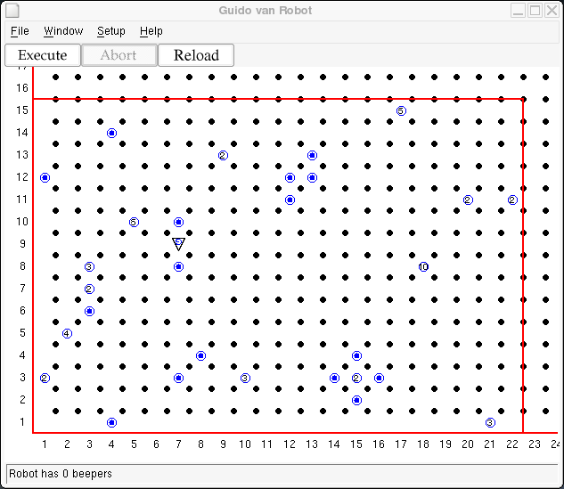

Guido learned a lot from the community service project he did back in step 8. Motivated to give even more to his community, he has volunteered to pick up all the trash in Central Park.
The park is represented by a bounded rectangular area of unknown dimensions. Guido starts out in a random place in the park. Trash (represented by beepers) is spread throughout the park. Neither the amount nor the location of the trash is known at the start of the cleanup. Several pieces of trash can be at the same location. Guido's job is to pick up all the trash in the park and deposit it at the north-east corner of the park. He should then go to the south-west corner of the park facing north and turn himself off for some well deserved rest under a tree while he waits for his ride home.
A sample world for this problem might look something like this:

Copyright © 2003 Roger Frank.